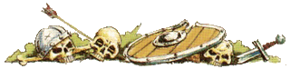

| |
Romok készítése

Az alábbiakban
ismertetésre kerülõ módszerrel, gyorsan és könnyedén
tudunk, szép és prakti- kus tereptárgyakat készíteni.
Bár ezzel a módszerrel
fõleg romokat és leomlott falakat lehet megformálni,
a haladók megpróbálkozhatnak bonyolultabb
dolgok létrehozásával is. El lehet vele készíteni
például komplett várakat és épületeket is, a
lehetõségeknek csak a képzeletünk szabhat határt.
1. Elsõ lépésként
gondoljuk ki, hogy miféle tereptárgyat is
akarunk elkészíteni. Fontos, hogy ne csak
jól nézzen ki, de használható is
legyen. Ugyanis hiába néz ki jól egy tereptárgy,
ha a játék szempontjából teljesen használhatatlan.
Ha lehetséges rajzoljuk is le ötleteinket.
2. Most készítsük
el a tereptárgyunk alapját. Ez tetszõleges méretû
lehet, de célszerû nem sokkal nagyobbra készíteni,
mint maga a modell alapterülete. Ehhez szûkségünk
lesz egy maximum fél centi vastag, sík anyagra.
Ez lehet bármi: hungarocell, fa, gipsz, a lényeg,
hogy jól formálható legyen, mert a széleit szépen
le kell csiszolnunk, hogy beleolvadjon a
terepasztal síkjába. Ha gipszet vagy
hungarocellt használunk, akkor érdemes
ragasztani alá egy vékony fémrácsot, ezzel
elkerülve, hogy eltörjön a munkálatok közben.
3. Most jöjjön
maga a tereptárgy elkészítése. Egy nagyobb
darab hungarocellt szépen késsel az általunk
elképzelt formára vágunk. Ez rendkívül sokféle
lehet. Lehet egyszerû falmaradvány, de akár egy
bonyolult romos épület is. Az elkészült formán
ejtsünk apró bevágásokat, az egész felületén.
Ezzel romos benyomást kelthetünk, ha kellõ
szorgalommal csináljuk. Általánosságban
elmondható, hogy minél aprólékosabbak ezek a
bevágások, annál élethûbb és viharvertebb
lesz a modellünk. Persze amennyiben nem romot
szeretnénk végeredményül, ettõl el lehet
tekinteni.
4. Negyedik
lépésben ragasszuk fel a kifaragott modellt az
elõzõleg már elkészített alapra. Lehet
gombostûkkel is rögzíteni a ragasztó mellett,
ezt ugyanis a következû pontban ismertetett eljárás
úgy is eltakarja. Vigyázzunk néhány ragasztó
oldja a hungarocellt. Próbáljuk ki ragasztás
elõtt, nehogy csúnya meglepetésben legyen részünk!
5. Egy tégelyben
finomszemû homokot (a legjobb az állatboltokban
kapható papagájhomok) összekeverünk valamilyen
folyékonyabb ragasztóval. Ez az anyag akkor jó,
ha egy pépes tejbegríz-szerû masszát kapunk.
Esetleg összekeverés elõtt le is szitálhatjuk
a homokot.
6. Ezzel az
anyaggal az egész modell felületét bevonjuk. De
ügyeljünk, hogy vékonyan és szépen vigyük
fel ezt a réteget. Elsõre kicsit nehéz lesz, de
hamar bele lehet jönni. Ehhez a munkához, én
egy egyszerû konyhai kést ajánlanék.
7. Tulajdonképpen
a munka modellezési részén túl vagyunk. Már
csak a kifestés van hátra. Az egészet fújjuk
le fekete alapozóval, vagy amilyen van, de a sötét
színek jobban használhatóak a modelleken. Figyelem
a Citadel által forgalmazott alapozók oldják a
hungarocellt! Annak kiküszöbölésére,
hogy ne folyjon szét az eddig nehezen elkészített
modellünk, csak egyetlen megoldás létezik. Be
kell fedni a modell teljes felületét valamilyen
anyaggal, ezáltal nem tud érintkezni az alapozó
a hungarocellel! Erre a célra én folyékony
ragasztót ajánlanék, amit vigyünk fel vékonyan
minden olyan részre a modellen, ahol a
hungarocell érintkezhetne az alapozóval! Majd a
modell sziklás részeit kenjük le egy sötétebb
szürke árnyalattal! Ha ez megszáradt, a szárazecset
technikával vigyünk világosszürkét vagy
fehéret a rom egész területére. A földhöz közeli
területeket esetleg fekete vagy sötétszürke
tintával át is moshatjuk, de ne felejtsük el
azonnal letörölni, hogy a kiemelkedõ részek
továbbra is világosak maradjanak!
8. Nem
maradt már hátra, csak a talaj kifestése. Itt a
nagy felület miatt modell füvet kell használnunk.
Fessük be a talajt Goblin Green-nel (nyugodtan hígítsuk
fel bõ vízzel, drága az a festék), majd kenjük
be átlátszó ragasztóval és szórjunk rá a
modell füvet. Ezután díszíthetjük eldobált
fegyverekkel vagy más tereptárgyakkal.
Álljon itt
pár kép, ezzel a technikával készített
modellekrõl: Sziklás
domb, Falmaradvány.
írta:
Rincewind
|
|